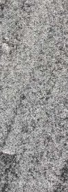

示意例子在线版本
http://v.ziti163.com
依赖于
Zoomla!逐浪CMS
控制板
传统画笔
童心蜡笔
瘦金情调
现代铅笔
现代粉墨
锐丽行书
画笔粗细：
26
常规
逐浪报人书法行体
逐浪海棠居刻本字
逐浪粗颜楷
逐浪日系楷体
逐浪唐寅行书体
逐浪帅宋斜楷体
逐浪音乐符号歌谱体
逐浪瑶小硬
逐浪丫玉体
逐浪新宋_特细
逐浪湘教钢笔体
逐浪细阁体
逐浪文宣剪纸体
逐浪时尚钢笔体
逐浪金农书法体
逐浪海昏侯汉简隶书
逐浪古宋书法楷体
逐浪盖世英雄狂草书
逐浪报人书法行体
逐浪仿篆体
文
文
文
撤销
恢复
清空画板
书写回放
获取引用
保存书写
